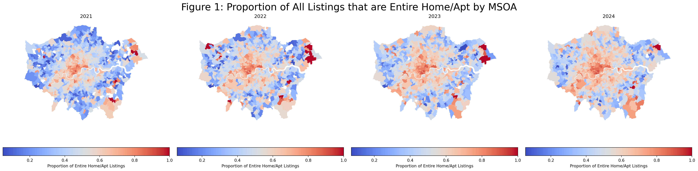
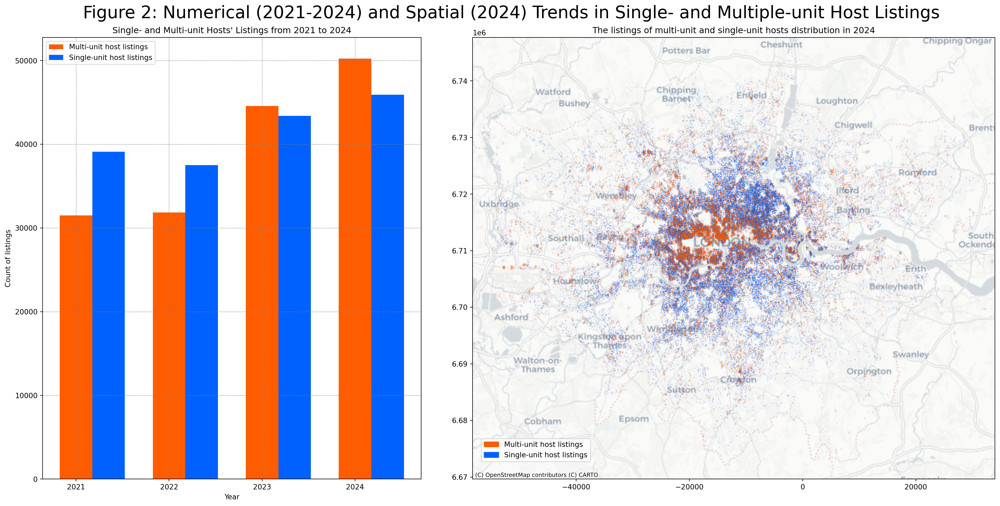
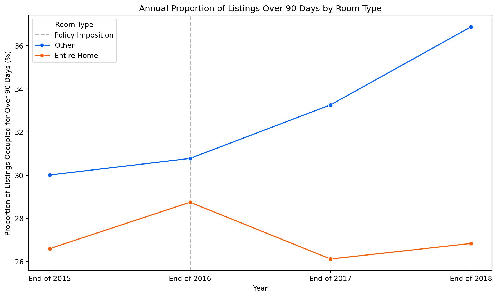
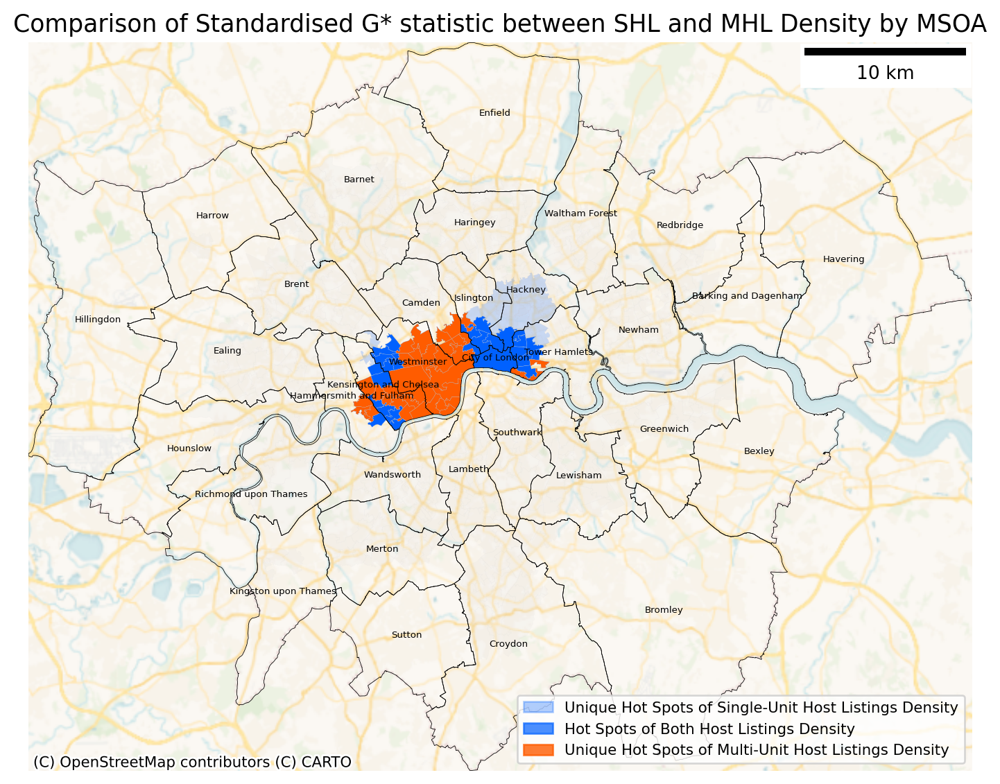

/Users/tsernian/Documents/CASA/CASA0013_FSDS/myenv/lib/python3.9/site-packages/spaghetti/network.py:40: FutureWarning: The next major release of pysal/spaghetti (2.0.0) will drop support for all ``libpysal.cg`` geometries. This change is a first step in refactoring ``spaghetti`` that is expected to result in dramatically reduced runtimes for network instantiation and operations. Users currently requiring network and point pattern input as ``libpysal.cg`` geometries should prepare for this simply by converting to ``shapely`` geometries.
warnings.warn(dep_msg, FutureWarning, stacklevel=1)CASA0013 Group Work: Living la Vida Code-a
1. Who collected the InsideAirbnb data?
Prior to 2015, the InsideAirbnb (IA) data (going back to 2013) was collected by Tom Slee. From early 2015, the IA data was (and continues to be) collected by founder Murray Cox, an Australian community and data activist, together with a team of collaborators and advisors comprising artists, activists, researchers, and data scientists (“Inside airbnb,” n.d.).
2. Why did they collect the InsideAirbnb data?
IA data seeks to challenge official data from Airbnb, which may be misrepresentative of its operations and impact (Slee and Cox, 2016). It offers an alternative perspective to Airbnb’s (limited) publicly available data by purposefully representing it through datasets and visualisations, with the not-for-profit goal of helping cities and communities to make informed decisions concerning Airbnb’s operations (“Inside airbnb,” n.d.). In doing so, IA increases data accessibility on Airbnb’s impacts on residential neighbourhoods worldwide, especially with regard to quantifying the ramifications of short-term lets (Wang et al., 2024) on local communities.
3. How did they collect it?
The IA data is collected through a process known as web-scraping, in which automated software repeatedly visits the Airbnb website and extracts publicly-available data from each listing, such as description, location, and room or property type (Prentice and Pawlicz, 2023). The Python code used to scrape the data is available to the public on Github but has not been updated since 2019 (Alsudais, 2021), meaning it is not possible to know exactly how the data are processed. However, IA does not merely scrape website data, but also processes these and augments them with assumptions about their nature (“Inside airbnb,” n.d.). These approaches will be discussed further below.
4. How does the method of collection (Q3) impact the completeness and/or accuracy of the InsideAirbnb data? How well does it represent the process it seeks to study, and what wider issues does this raise?
As a scrape of Airbnb’s website rather than the raw data themselves, the final IA datasets have potential biases and quality issues that should be taken into account by analysts and legislators using them to inform policy. Web-scraping only extracts publicly-available information on Airbnb’s website at the time the script is run: this means it cannot capture deleted listings or exact listing locations, as Airbnb anonymises these for privacy reasons (Prentice and Pawlicz, 2023). In addition, Airbnb’s website does not differentiate between when listings are booked or blocked by their host (Crommelin et al., 2018), meaning IA has to use review counts to roughly estimate occupancy rates. However, the process of scraping and processing by IA itself also introduces uncertainty. The web scrapes’ reservation query settings affect the data retrieved, meaning listings may be undercounted if they do not match the search’s parameters (Prentice and Pawlicz, 2023). Furthermore, Alsudais (2021) found inaccuracies in the way IA had joined reviews and listing IDs.
Moreover, it is important to remember that Airbnb’s raw data is not necessarily accurate in the first place. Some listings may be fake, duplicates, or inactive (Adamiak, 2022). Finally, the IA data cannot capture short-term letting (STL) transactions through other platforms (Prentice and Pawlicz, 2023). This raises the question of whether IA data alone can provide a holistic understanding of the STL market.
5. What ethical considerations does the use of the InsideAirbnb data raise?
The use of InsideAirbnb data raises a few ethical concerns due to the collection of the data through web scraping. Using an ethics framework developed by Krotov, Johnson and Silva (2020) in their paper, the ethical concerns of web scraping Airbnb’s data can be categorised into infringement of individual and organisational privacy, rights of research subjects, data quality and discrimination. These categories are very applicable and in the case of IA, researchers should always be aware of identifying possible harm to individuals, organisations and enact precautionary measures to avoid these harms.
Infringement of individual privacy and rights to research subjects are perhaps some of the most significant ethical concerns while using the IA dataset. Since web scraping involves extracting all possible data from a website before parsing and classifying them, these data may unintentionally infringe on users’ privacy as all web activities of individuals can be extracted, revealed and may be a means of personal identification in the future (Zook et al., 2017). The IA dataset covers users reviews with their first name, duration of stay, neighbourhood, and comments recorded. Although full names and exact locations are anonymised by Airbnb, details of user reviews may reveal more about their daily lives and can risk being re-identified with generative models (Rocher, Hendrickx and Montjoye, 2019). Even if personal privacy is not harmed, users may not have given permission to researchers for the use of their data, infringing on rights of research subjects. This requires additional steps to protect anonymity of subjects by deleting identifiable information or detaching unique keys from the dataset (Kohlmayer, Lautenschläger and Prasser, 2019).
Just like how individual privacy is an ethical concern, organisations have a right to their privacy as well. Airbnb’s privacy may be compromised through web scraping since their listing data embedded were not meant to be revealed entirely to the public. This may lead to confidential operations of the company being leaked including market share and intended audiences which can be maliciously used by competitors. For example, Uber was accused of using web scraping to conduct surveillance on its drivers and its competitors (Rosenblatt, 2017).
6. With reference to the InsideAirbnb data (i.e. using numbers, figures, maps, and descriptive statistics), what does an analysis of Hosts and the types of properties that they list suggest about the nature of Airbnb lettings in London?
Room types
An analysis of 2021-2024 Airbnb data shows a growing dominance of entire-home listings. From data on room types, we identified a rise in the proportion of entire-home listings (as opposed to single-room listings) from around 55% of total listings in 2021 to 64% in 2024. This reflects growing demand for entire-home rentals, challenging Airbnb’s claims to a “sharing economy” (minton-23?). An exploration of where this change is occurring (Figure 1) reveals that entire-home listings remain concentrated in central London but have steadily expanded outward over time.

Multiple-listing hosts
Equally noteworthy is an analysis of multiple-unit hosts. As IA notes, multiple-unit hosts are likely commercial hosts (InsideAirbnb, no date), who often escape housing/land-use policies and taxation applicable to traditional landlords (Wachsmuth and Weisler, 2018), thus warranting greater scrutiny. An analysis of listings reveals that the proportion of multiple-unit host listings increased from 44.6% of total Airbnb listings in 2021 to 52.2% in 2024, reflecting an expanding dominance of the listings market. The bar chart below visualises the steady growth in the presence of multiple-unit hosts’ listings; a spatial visualisation of where these hosts’ properties are located (based on 2024 data) indicates a concentration of multiple-unit host listings in central London, which will be further explored below.

These trends in room and host types point towards the increasing commercialisation of Airbnb lets. More than bona fide home sharing, Airbnb appears to be a platform for commercial profit at the expense of local communities (Quattrone et al., 2016).
7. Drawing on your previous answers, and supporting your response with evidence (e.g. figures, maps, EDA/ESDA, and simple statistical analysis/models drawing on experience from, e.g., CASA0007), how could the InsideAirbnb data set be used to inform the regulation of Short-Term Lets (STL) in London?
As indicated above, although Airbnb was initially conceived of and portrayed as a small-scale, peer-to-peer exchange platform, its rapid expansion and shift towards entire homes and multi-unit hosts has led to concerns about rent increases, lost hotel and income tax revenues, and even gentrification and displacement (Huebscher and Borst, 2023). In response to these challenges, hosts in Greater London are limited to renting out ‘entire home’ listings for a maximum of 90 nights annually: a regulation introduced in January 2017 (Airbnb, 2017). In this section, we seek to assess the efficacy of this 90-day regulation in curbing the expansion of commercialised Airbnb listings, and consider whether other approaches may be more effective.
Temporal Regulation
Beginning with the 90-night limit, we first ask whether the policy reduced the proportion of entire home listings over 90 nights relative to other room types. The null hypothesis posits no difference in the proportion of entire home listings exceeding 90 nights compared to single room listings before and after the policy was imposed, while the alternate hypothesis suggests a change occurred.
A limitation of IA data is its lack of specific occupancy information, necessitating estimation via review counts. Although a number of metrics were tested, this report ultimately adopts Wang et al.’s (2024) occupancy estimation method due to its behavioral plausibility. This approach estimates one review per two stays, assumes a stay duration of three nights unless a longer minimum stay is specified, and caps occupancy at 21 nights per month to account for cleaning and gaps. However, this method is inherently unfalsifiable and uncertain - for example, users may leave reviews after booking cancellations. Therefore, while we cannot use this metric to talk about absolute changes or proportions, we can compare figures over time to consider relative occupancy trends.
A difference-in-differences (DiD) test for 2015-2018 assessed this trend more robustly. Using non-entire home room types as a control group (Figure 3), the test found a small but statistically significant impact: the policy was associated with a 4.92% decrease in the likelihood of entire homes being occupied over 90 nights. Moreover, proportions for entire homes over the past 12 months remain below pre-policy figures, indicating the cap has been effective in suppressing numbers. From here, we can tentatively reject H0 and say that, although the effect size was small, the 90-night cap did reduce the proportion of entire homes rented out over this limit.

However, a reduction in the proportion of entire home listings over 90 nights does not necessarily mean compliance with this policy. A paired sample t-test found a statistically significant increase in the number of listings per host between 2016 and 2017, suggesting hosts may have created multiple listings for single properties to circumvent the limit. Another DiD test comparing average listings per host between 2015 and 2018 in London and Edinburgh (which did not experience regulatory changes) found the policy was associated with a 6.9% increase in listings per host, though this was not statistically significant (p=0.199). Further consideration of duplicate listings is essential to assess the policy’s implications.
In conclusion, while the 90-night cap reduced the proportion of entire homes occupied for over 90 nights in London, its impact on overall STL activity in the city remains uncertain. Further analysis of substitution effects and access to Airbnb’s actual occupancy data are necessary for a robust assessment. Ultimately, temporal restrictions may prove beneficial in curbing commercialisation of the platform, but policymakers should urge Airbnb to supplement these with checks (and potential fines) for duplicate listings which try to circumvent these requirements.
Spatial Regulation
Having assessed the efficacy of the 90-day policy along a temporal scale, we now consider the spatial implications of policies that aim to curb the expansion of commercialised Airbnbs in London. The effects of multi-unit hosts are well documented in the literature; Wachsmuth and Weisler (2018) reported that gentrification and reduced rental opportunities were rampant in neighbourhoods with a strong presence of multi-unit hosts, consequently transforming Airbnb’s peer-to-peer sharing economy platform to a professional hosts-to-peer business operator. To identify spatial clusters of single-unit host and multi-unit host listings, we first aggregated counts of Single-unit Host Listings (SHL) and Multi-unit Host Listings (MHL) into count per square kilometers (listing density) in each Middle Super Output Area (MSOA). Getis-Ord G* statistic was then employed to determine hot and cold spots of SHL and MHL density. Due to the granularity of the MSOA layer, the G* statistic was calculated using k=8 neighbours to ensure that sufficient local patterns are captured. The G* z-scores are also standardised, making the both SHL and MHL densities comparable.

From figure 4, we observe that while hotspots of both SHL and MHL are clustered in Central London, unique hotspots of MHL are found nearer to popular tourist attractions in boroughs such as Westminster and Kensington & Chelsea. Unique hotspots of SHL are found further away in Boroughs of Islington and Hackney. This suggests that there exists a distinction of central London locations where single- and multi-unit hosts operate, with multi-unit hosts being able to operate in the most exclusive areas of central London. However, the clusters of both SHL and MHL also suggests that a spatial regulation of Airbnbs through zoning or spatial bans as seen in other cities may not be effective in curbing commercialisation of Airbnb as both clusters are close geographical proximities, with a lack of borough-level dominance of a particular listing type. This makes it difficult to single out MHL which may unintentionally disadvantage single-unit hosts who rely on Airbnb for supplemental income instead of multi-unit hosts who often operate as businesses. Instead, policy interventions could target hosts based on whether they are single- or multi-unit hosts. Multi-unit hosts could be subjected to stricter regulations, such as specific multi-unit licenses and higher tax rates, with the overall objective of assuaging the impacts of over-commercialisation of short-term lets.
References
Adamiak, C. (2022) “Current state and development of Airbnb accommodation offer in 167 countries,” Current Issues in Tourism, 25(19), pp. 3131–3149. doi: 10.1080/13683500.2019.1696758.
Alsudais, A. (2021) “Incorrect data in the widely used Inside Airbnb dataset,” Decision Support Systems, 141, p. 113453. doi: 10.1016/j.dss.2020.113453.
Crommelin, L. et al. (2018) “Is Airbnb a Sharing Economy Superstar? Evidence from Five Global Cities,” Urban Policy and Research, 36(4), pp. 429–444. doi: 10.1080/08111146.2018.1460722.
“Inside airbnb” (n.d.). Available at: http://insideairbnb.com.
InsideAirbnb (no date) “London.” Available at: https://insideairbnb.com/london/ (Accessed: December 16, 2024).
Kohlmayer, F., Lautenschläger, R. and Prasser, F. (2019) “Pseudonymization for research data collection: Is the juice worth the squeeze?” BMC Medical Informatics and Decision Making, 19(1), p. 178. doi: 10.1186/s12911-019-0905-x.
Krotov, V., Johnson, L. and Silva, L. (2020) “Tutorial: Legality and Ethics of Web Scraping,” Communications of the Association for Information Systems, 47(1). doi: 10.17705/1CAIS.04724.
Prentice, C. and Pawlicz, A. (2023) “Addressing data quality in Airbnb research,” International Journal of Contemporary Hospitality Management, 36(3), pp. 812–832. doi: 10.1108/IJCHM-10-2022-1207.
Quattrone, G. et al. (2016) “Who Benefits from the "Sharing" Economy of Airbnb?” in Proceedings of the 25th International Conference on World Wide Web. Montréal Québec Canada: International World Wide Web Conferences Steering Committee, pp. 1385–1394. doi: 10.1145/2872427.2874815.
Rocher, L., Hendrickx, J. M. and Montjoye, Y.-A. de (2019) “Estimating the success of re-identifications in incomplete datasets using generative models,” Nature Communications, 10(1), p. 3069. doi: 10.1038/s41467-019-10933-3.
Rosenblatt, J. (2017) “Uber Data-Scraping, Surveillance Detailed by Ex-Manager,” Bloomberg.com. Available at: https://www.bloomberg.com/news/articles/2017-12-15/uber-data-scraping-surveillance-detailed-in-ex-manager-s-letter (Accessed: December 5, 2024).
Slee, T. and Cox, M. (2016) “How Airbnb’s Data hid the Facts in New York City,” InsideAirbnb. Available at: https://insideairbnb.com/research/how-airbnb-hid-the-facts-in-nyc/ (Accessed: December 5, 2024).
Wachsmuth, D. and Weisler, A. (2018) “Airbnb and the rent gap: Gentrification through the sharing economy,” Environment and Planning A: Economy and Space, 50(6), pp. 1147–1170. doi: 10.1177/0308518X18778038.
Wang, Y. et al. (2024) “The challenges of measuring the short-term rental market: An analysis of open data on Airbnb activity,” Housing Studies, 39(9), pp. 2260–2279. doi: 10.1080/02673037.2023.2176829.
Zook, M. et al. (2017) “Ten simple rules for responsible big data research,” PLOS Computational Biology, 13(3), p. e1005399. doi: 10.1371/journal.pcbi.1005399.